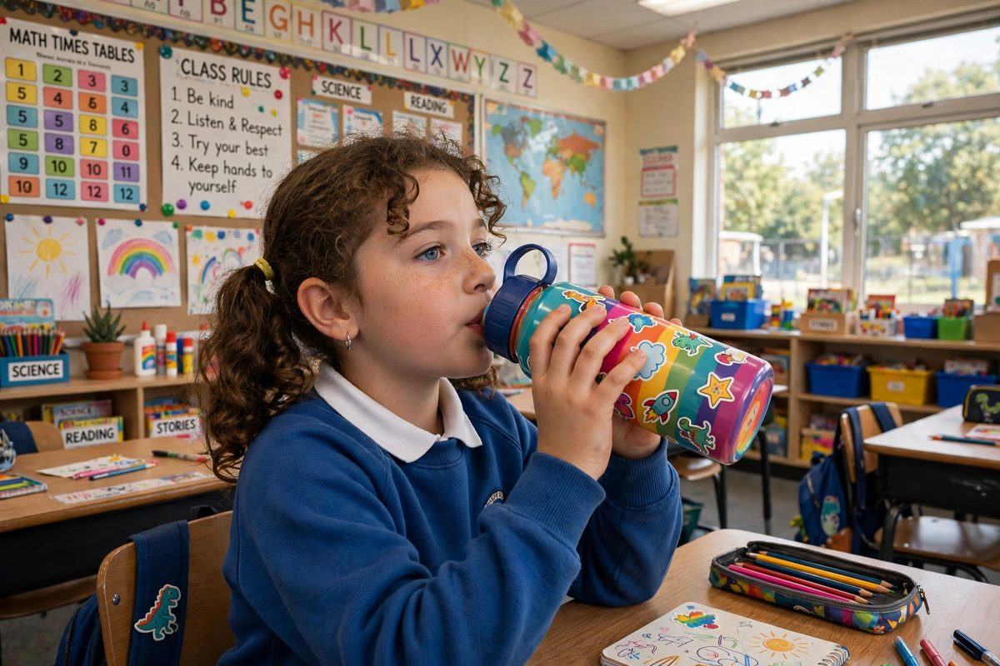

Water Intake for Children
How much water children need at different ages, how to encourage drinking, and the signs of dehydration in children.
Children need relatively more water per kilogram than adults, because they have a higher surface area to weight ratio and they are more active, but they are also less likely to notice thirst or to ask for a drink. Parents and carers therefore need to build drinking into the day. This guide explains how much children need at different ages and how to make drinking a habit.
How much do children need
Needs rise with age and size. Toddlers of one to three years need about 1 to 1.3 litres of total water a day, including food. Children of four to eight years need about 1.2 to 1.6 litres. Children of nine to thirteen years need about 1.6 to 2.1 litres for girls and 1.8 to 2.4 litres for boys. Teenagers approach adult needs: about 2 to 2.5 litres for girls and 2.5 to 3 litres for boys. These are total water figures from food and drinks combined, and active children or hot weather raise them. They are guides for healthy children, not prescriptions.
Why children are more vulnerable
Children lose water faster than adults relative to their size, they generate more heat when active, and their kidneys are less able to conserve water. They also rely on adults to provide drinks, and they often ignore thirst when they are playing. The result is that children can become dehydrated quickly, especially in hot weather or during illness. The signs in children include a dry mouth, fewer wet nappies or toilet trips, dark urine, tiredness, irritability, and in babies a sunken soft spot on the head.
Making drinking a habit
Give every child a water bottle they like and keep it filled. Offer water with every meal and snack, and keep a jug or bottle visible at home. Encourage a drink before, during and after sport, and make sure schools allow water bottles in class. Flavoured water, with a slice of fruit rather than sugar, can help a reluctant drinker. Avoid making sugary drinks the default: water should be the drink a child reaches for, and sweet drinks the occasional treat.
Drinks to limit
Sugary drinks, including fruit juice and fizzy drinks, add calories and harm teeth, and they are not a good way to hydrate. Energy drinks are not suitable for children at all. Milk is nutritious but it is food as well as fluid, and it should not replace water. Tea and coffee are not appropriate for young children. The simple rule is water first, milk with meals, and sweet drinks only occasionally.
When to seek medical advice
Seek medical advice promptly if a child cannot keep fluids down, has had no urine for eight hours, is unusually sleepy or irritable, has a dry mouth and no tears when crying, or has diarrhoea or vomiting that is not improving. Babies and young children can become dehydrated quickly, and they should be seen sooner than adults with the same symptoms. Oral rehydration solutions from a pharmacy can help replace water and salts after illness, and a doctor can advise on how much to give.
A school day, planned for a child
Take a 9-year-old who needs about 1.8 litres of total water a day. Breakfast includes a glass of milk, about 200 ml. A water bottle at school, refilled once, provides about 800 ml across the day. Lunch includes a glass of water, about 200 ml. An after-school snack of fruit adds about 150 ml of water. Dinner includes a glass of water, about 200 ml, and an evening drink adds 150 ml. Food adds the rest. The plan works because the bottle is the centre of it: a bottle the child likes, filled in the morning and refilled at lunch, covers most of the day without any nagging. Check the bottle in the evening: if it is still full, the child did not drink at school, and a reminder to the teacher may help.
Frequently Asked Questions
How much water does a child need?
Roughly 1 to 1.3 litres a day for toddlers, 1.2 to 1.6 for ages 4 to 8, and 1.6 to 2.4 for ages 9 to 13, including water from food.
What are the signs of dehydration in children?
Dry mouth, fewer toilet trips, dark urine, tiredness, irritability, and in babies a sunken soft spot on the head.
Are sugary drinks good for hydration?
No. Water should be the default drink. Sugary drinks add calories and harm teeth, and energy drinks are not suitable for children.